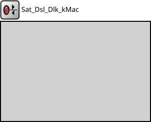

Package: Nodes._20_Satellite.DSL._20_Data_Link
Sat_Dsl_Dlk_kMac
compound module(no description)

Inheritance diagram
The following diagram shows inheritance relationships for this type. Unresolved types are missing from the diagram.
Used in compound modules
| Name | Type | Description |
|---|---|---|
| Sat_Dsl_Dlk | compound module | (no description) |
Extends
| Name | Type | Description |
|---|---|---|
| MacProtocolBase | simple module |
Module base for different MAC protocols. |
Parameters
| Name | Type | Default value | Description |
|---|---|---|---|
| interfaceTableModule | string | ||
| address | string | "auto" |
MAC address |
| headerLength | int | 52B |
length of the MAC header |
| mtu | int | 1500 |
Maximum Transmission Unit |
| satIndex | int | 0 |
Index of the satellite in the constellation |
| LoRaSF | int | 10 |
LoRa parameters |
| LoRaTP | double | 25 | |
| LoRaCF | double | 868000000 | |
| LoRaBW | int | 125000 | |
| LoRaCR | int | 1 | |
| fixedLossRate | double | 0 |
Phy fixed loss |
Properties
| Name | Value | Description |
|---|---|---|
| display | i=block/rxtx | |
| class | mac::Sat_Dsl_Dlk_kMac |
Gates
| Name | Direction | Size | Description |
|---|---|---|---|
| upperLayerIn | input | ||
| upperLayerOut | output | ||
| lowerLayerIn | input | ||
| lowerLayerOut | output |
Signals
| Name | Type | Unit |
|---|---|---|
| packetReceivedFromUpper | cPacket | |
| packetReceivedFromLower | cPacket | |
| packetDropped | cPacket | |
| packetSentToLower | cPacket | |
| packetSentToUpper | cPacket |
Source code
module Sat_Dsl_Dlk_kMac extends MacProtocolBase like IMacProtocol { parameters: @class(mac::Sat_Dsl_Dlk_kMac); string address @mutable = default("auto"); // MAC address int headerLength @unit(B) = default(52B); // length of the MAC header int mtu = default(1500); // Maximum Transmission Unit int satIndex = default(0); // Index of the satellite in the constellation // LoRa parameters int LoRaSF = default(10); double LoRaTP = default(25); double LoRaCF = default(868000000); int LoRaBW = default(125000); int LoRaCR = default(1); // Phy fixed loss double fixedLossRate = default(0); // Fixed loss in percentage connections allowunconnected: }File: src/Nodes/_20_Satellite/DSL/_20_Data_Link/Sat_Dsl_Dlk_kMac.ned
 This documentation is released under the Creative Commons license
This documentation is released under the Creative Commons license